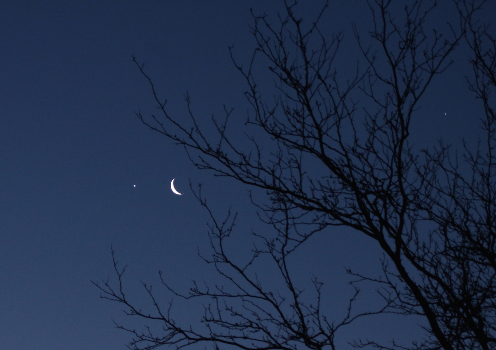
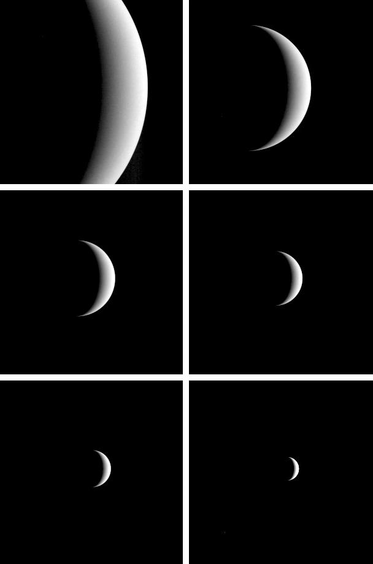

With respect to other planets
Overview
Venus is a terrestrial planet and is sometimes called Earth's "sister planet" because of their similar size, mass, proximity to the Sun, and bulk compositio
Venus is a terrestrial planet and is sometimes called Earth's "sister planet" because of their similar size, mass, proximity to the Sun, and bulk composition. It is radically different from Earth in other respects. It has the densest atmosphere of the four terrestrial planets, consisting of more than 96% carbon dioxide. The atmospheric pressure at the planet's surface is about 92 times the sea level pressure of Earth, or roughly the pressure at 900 m (3,000 ft) underwater on Earth. Venus has, by far, the hottest surface of any planet in the Solar System, with a mean temperature of 737 K (464 °C; 867 °F), even though Mercury.

Commonly know fact
Some Facts
- A day on Venus is longer than a year.
- Venus spins clockwise on its axis.
- Your weight on Mercury would be 38% of your weight on Earth.
- Venus has 90 times the atmospheric pressure of Earth
Venus
VS

Venus Comparision with Other Planets
Below Data are the most accurate and latest values predicted by different space agencies.
| AVERAGE ORBIT DISTANCE | |
|---|---|
| 108,209,475km | 149,598,262km |
| MEAN ORBIT VELOCITY | |
|---|---|
| 126,074km/h | 107,218km/h |
| SURFACE GRAVITY | |
|---|---|
| 8.87m/s2 | 9.80665m/s2 |
| ESCAPE VELOCITY | |
|---|---|
| 37,296km/h | 40,284km/h |
| SURFACE AREA | |
|---|---|
| 460,234,317km2 | 510,064,472km2 |
10 Things you need to know
1
Venus has more volcanoes than any other planet in the Solar System. The astronomers have counted 1,600 volcanoes on Venus's surface, but most likely this figure will be even greater because the size is too small that we can not see. The scientists said that the majority of craters on Venus has been dormant, although there may be a few still active.
2
A day on Venus by 243 days on Earth (this shows a rotation of Venus how long). Meanwhile, a year on this planet (while orbiting the Sun) shorter, with just 224.7 days on Earth.
3
Of all the planets of the solar system, the Venus has many characteristics similar to Earth. Both planets are nearly equal size and structure of Venus is similar to Earth. Venus's orbit is also close to the orbit of the Earth than any other planet in the Solar System. Both planets are relatively young surface and atmosphere are thick, cloudy (however, note that the clouds of Venus are mostly toxic sulfuric acid).
4
Air pressure on the surface of Venus huge, about 90 times higher than sea level pressure on Earth. In other words, the pressure on Venus is equivalent to the ocean water pressure at a depth of 1km Earth. Russian spacecraft, Venera, actually landed on the planet's surface and send and capture stunning images of harsh on the ground, but with the terrible heat, pressure, and other harsh conditions , train travel did not exist long after landing
5
Venus rare among planets that we can observe the sun when it passes through. Earth is the third planet of the solar system, so we can only observe events on the two planets are Mercury and Venus. Venus glide across the sun is a very rare phenomenon, to more than a century to happen a couple, or two occurrences are separated by approximately 8 years.
6
In the solar system, Venus is not the largest but the planet Earth location makes it the brightest star in the sky. It also is the second brightest object in the night after the moon. Venus reaches greatest brightness adjacent time sunset or sunrise, so that folk also known as Venus (the planet rises at sunset) and stars Mai (when the planet rises at dawn intelligent).
7
Venus has been the target of human observation millennia from now. According to records, from 1600 BC, the ancient Babylonians were tracking the orbit of the planet in the sky. Greek mathematician Pythagoras was the first to discover that the brightest star in the early morning and late afternoon is a fact - Venus.
8
The winds blowing through Venus at super speed, can reach up to 724kph on the clouds between. The winds on Venus is faster than the most powerful hurricane of the Earth. The astronomers say Venus wind blows so quickly that they cause a "super-rotation", that the cloud was blowing around the planet turned 1 only 4 days on earth.
9
On the moon, phase cycle is 29 days, also known as moon. Because Venus orbits the Sun within the orbit of the planet Earth should also have phases like the Moon. When Venus in the position opposite the sun is when it is in full phase (like the full moon) and the planet between the Earth and the Sun, which means it is in a new phase (such as the first moon month) .
10
Since most of Venus's atmosphere is carbon dioxide phenomenon huge greenhouse effect causes the surface of the planet is warming. Temperatures here can be up to 870 degrees F (470 degrees C), Venus is the hottest planet in the solar system. Some scientists thought that Venus had oceans in the past, but has evaporated as the temperature increases due to planetary greenhouse effect lost control. The entire surface of Venus is an arid desert with rocks and dust.
Gallery

Venus, Moon and a Bit of Earth
Bright Moon and Crescent Venus

Venus - Computer Simulated Global View of the Northern Hemisphere

Venus, Moon and Jupiter

Moon, Venus, Jupiter, Earth Lineup

Venus Cloud Patterns

Dickinson Crater on Venus

Venus Cloud Tops Viewed by Hubble

MESSENGER Bids Farewell to Venus

Venus - 3D Perspective View of Maat Mons

Hemispheric View of Venus

The Crater Farm